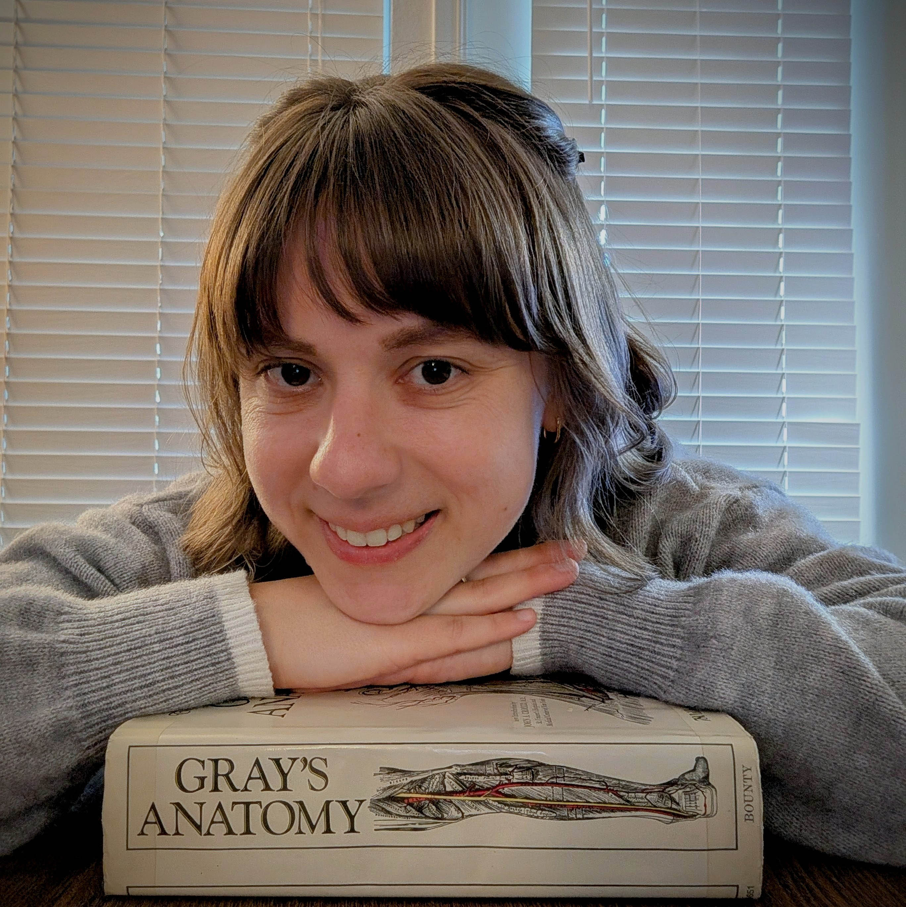

About
Dr. Jaimi A. Gray
I am a research scientist at the University of Texas at Austin's High Resolution X-Ray Computed Tomography facility (UTCT). I use Computed Tomography (CT) to create digital representations of objects, and I specialise in contrast-enhanced imaging of vertebrate anatomy using diffusible iodine-based contrast-enhanced CT (diceCT). I am heavily involved in the Non-Clinical Tomography User's Research Network (NoCTURN).
I previously worked on the broad-scale digitisation effort, the open Vertebrate (oVert) project. I created digital datasets of specimens from natural history collections, and made them freely available on MorphoSource for researchers, educators, artists, and anybody else.
As well as working to digitise objects at a broad scale, I also work with collaborators on focussed anatomy projects including squamate osteology, frog brain morphology, and new species descriptions.
Publications
Kelsi Hurdle, Morgan Chase, Callie H. Crawford, Freya E. Goetz, Jaimi A. Gray, Alexander S. Hall, Jennifer J. Hill, John J. Jacisin III, Richard E. Johnston, Leigha M. Lynch, Elizabeth Martin-Silverstone, Heather F. Smith, Christopher M. Zobek, Paul M. Gignac (2025).
A FAIR narrative on open science: when, who, what and how of computed tomography and the NoCTURN network. Royal Society Open Science, 12(12). https://doi.org/10.1098/rsos.251691Till Ramm, Emily Roycroft, Jaimi A. Gray, Christy A. Hipsley, Scott Hocknull, Johannes Müller, Jane Melville (2025).
Climate change predicts Quaternary extinctions and extant genetic diversity in a threatened Australian lizard. Current Biology, 35(23), 5669-5682.
https://doi.org/10.1016/j.cub.2025.09.067KP Dinesh, Varun R. Torsekar, Jaimi A. Gray, Kartik Shanker, David C. Blackburn (2025).
Phylogenetic position and osteology of a population of Mysticellus franki Garg & Biju, 2019 (Anura: Microhylidae) from south of the Palghat Gap, Western Ghats, India: Phylogeny and osteology of Mysticellus from southern Western Ghats. Hamadryad, 42(1 and 2).
https://www.hamadryad.org/index.php/journal/article/view/151Ivan Nunes, Mariana L. Lyra, Thaynara M. Machado, Andres Satiago Carrasco-Median, Felipe Silva De Andrade, Isabelle Aquemi Haga, Lucas M. Botelo, Mariana Pedrozo, Isabel G. Velasco, Fernando De Castro Jacinavicius, Jaimi A. Gray, David C. Blackburn, Tiana Kohlsdorf, Edelcio Muscat, L. Felip Toledo. (2025).
A new species of flea-toad of the genus Brachycephalus Fitzinger, 1826 (Anura: Brachycephalidae) from the cloud forests of Serra do Mar, southeastern Brazil. Zootaxa, 5691(2), 231-256.
https://doi.org/10.11646/zootaxa.5691.2.3Coleman Sheehy III, Robert Robins, David Blackburn, Jaimi A. Gray, Magalie Zoungrana, Marcel Kouete (2025).
Establishment of aquatic Rio Cauca Caecilians, Typhlonectes natans (Fischer 1880)(Gymnophiona: Typhlonectidae), in Florida, with notes on their relative abundance, distribution, and natural history. Reptiles & Amphibians, 32(1), e23352-e23352.
https://doi.org/10.17161/randa.v32i1.23352Baylea N. Davenport, Rebecca L. Wilson, Alyssa A. Williams, Jaimi A. Gray, Edward L. Stanley, Helen N. Jones (2025)
Aberrant placental structure is corrected with repeated nanoparticle-mediated IGF1 treatments in a guinea pig model of fetal growth restriction. Translational Research in Anatomy, 100424.
https://doi.org/10.1016/j.tria.2025.100424Till Ramm, Jaimi A. Gray, Christy A. Hipsley, Scott Hocknull, Jane Melville, Johannes Müller (2025)
Are modern cryptic species detectable in the fossil record? A case study on Agamid lizards. Systematic Biology, 74(3), 373-394.
https://doi.org/10.1093/sysbio/syae067Jaimi A. Gray, Edward L. Stanley, Coleman A. Sheehy III, Zachary A. Randall, Gregory J. Watkins-Colwell, David C Blackburn (2025)
The diffusion diaries: Diffusible iodine-based contrast-enhanced computed tomography for vertebrate natural history specimens. Integrative Organismal Biology, 7(1), obaf014.
https://doi.org/10.1093/iob/obaf014Luís Felipe Toledo, Lucas Machado Botelho, Andres Santiago Carrasco-Medina, Jaimi A. Gray, Julia R Ernetti, Joana Moura Gama, Mariana Lucio Lyra, David C. Blackburn, Ivan Nunes, Edelcio Muscat (2024)
Among the world’s smallest vertebrates: a new miniaturized Flea-Toad (Brachycephalidae) from the Atlantic rainforest. PeerJ, 12, e18265.
https://doi.org/10.7717/peerj.18265Amy L. Green, Paul M. Oliver, Jaimi A. Gray, Emma Sherratt (2024)
Adaptive tails? Parallel evolution of expanded tails in monsoonal tropics lineages of an Australian gecko radiation (Oedura). Zoological Journal of the Linnean Society, 202(2), zlad186.
https://doi.org/10.1093/zoolinnean/zlad186Paul M. Gignac, Valeria Aceves, Stephanie Baker, Jessica J. Barnes, Joshua Bell, Doug Boyer, Deborah Cunningham, Francesco De Carlo, Morgan H. Chase, Karly E. Cohen, Matthew Colbert, Theresa De Cree, Juan Daza, Edwin Dickinson, Valerie DeLeon, Lindsay Dougan, Franklin Duffy, ChristiAna Dunham, Catherine M. Early, Dave R. Edey, Scott Echols, Scott A. Eckley, Kelsey Fenner, Katheryn P. Franklin, Brent Gila, Freya E. Goetz, Jaimi A. Gray, Devora Gleiber, Alexander S. Hall, Romy Hanna, Markus Hannula, William Harris, Jennifer J. Hill, Casey M. Holliday, Kelsi Hurdle, Aditi Jayarajan, Jamie L. Knaub, Amanda R. Krause, Alice Leavey, Emily J. Lessner, Leigha M. Lynch, Murat Maga, Jessica Maisano, Kristin Marsh, Michael Marsh, Elizabeth Martin-Silverstone, John P. Misiaszek, April I. Neander, Haley D. O'Brien, Selby Olson, Eldon Panigot, Susan M. Motch Perrine, Teresa J. Porri, Andre Ramsey, Gary Scheiffele, Heather F. Smith, Edward L. Stanley, Stuart R. Stock, Claire E. Terhune, Dana L. Thomas, Camilo Andres Linares Vargas, Megan Veltri, Jason M. Warnett, Akinobu Watanabe, Emily A. Waters, Roger Wende, Daniel J. Wescott, Charles B. Withnell, Scott Whittaker, Zoë E. Wilbur, Jordan Wilson, Manon Wilson, Julie Winchester, Caitlin B. Yoakum, Christopher M. Zobek (2024)
The role of networks to overcome large-scale challenges in tomography: The non-clinical tomography users research network. Tomography of Materials and Structures, 5, 100031.
https://doi.org/10.1016/j.tmater.2024.100031David C. Blackburn, Jaimi A. Gray, Edward L. Stanley (2024)
The only “lungless” frog has a glottis and lungs. Current Biology, 34(10), R492-R493.
https://doi.org/10.1016/j.cub.2024.03.017David C. Blackburn, Doug M. Boyer, Jaimi A. Gray, Julie Winchester, John M. Bates, Stephanie L. Baumgart, Emily Braker, Daryl Coldren, Kevin W. Conway, Alison Davis Rabosky, Noe de la Sancha, Casey B. Dillman, Jonathan L. Dunnum, Catherine M. Early, Benjamin W. Frable, Matt W. Gage, James Hanken, Jessica A. Maisano, Ben D. Marks, Katherine P. Maslenikov, John E. McCormack, Ramon S. Nagesan, Gregory G. Pandelis, Heather L. Prestridge, Daniel L. Rabosky, Zachary S. Randall, Mark B. Robbins, Lauren A. Scheinberg, Carol L. Spencer, Adam P. Summers, Leif Tapanila, Cody W. Thompson, Luke Tornabene, Greg J.. Watkins-Colwell, Luke J Welton, Edward L. Stanley (2024)
Increasing the impact of vertebrate scientific collections through 3D imaging: The openVertebrate (oVert) Thematic Collections Network. BioScience, 74(3), 169-186.
https://doi.org/10.1093/biosci/biad120Jaimi A. Gray, Paul M. Gignac, Edward L. Stanley (2024)
The first full body diffusible iodine‐based contrast‐enhanced computed tomography dataset and teaching materials for a member of the Testudines. The Anatomical Record, 307(3), 535-548.
https://doi.org/10.1002/ar.25282Serjoscha W. Evers, Jasper Ponstein, Maren A. Jansen, Jaimi A. Gray, Joerg Froebisch (2023)
A systematic compendium of turtle mandibular anatomy using digital dissections of soft tissue and osteology. The Anatomical Record, 306(6), 1228-1303.
https://doi.org/10.1002/ar.25037Kevin M. Enge, Jaimi A. Gray, Coleman M. Sheehy, Trudy Ferraro, Drew M. Martin, Jonathan D. Mays (2023)
What killed the rarest snake in North America? Ecology, 104(1), 1-5.
https://doi.org/10.1002/ecy.3857Sean Callahan, Jenna M. Crowe‐Riddell, Ramon S. Nagesan, Jaimi A. Gray, Alison R. Davis Rabosky (2021)
A guide for optimal iodine staining and high‐throughput diceCT scanning in snakes. Ecology and Evolution, 11(17), 11587-11603.
https://doi.org/10.1002/ece3.7467Jaimi A. Gray, Mark N. Hutchinson, Marc E.H. Jones (2019)
Exceptional disparity in Australian agamid lizards is a possible result of arrival into vacant niche. The Anatomical Record, 302(9), 1536-1543.
https://doi.org/10.1002/ar.24096Jaimi A. Gray, Emma Sherratt, Mark N. Hutchinson, Marc E.H. Jones (2019)
Evolution of cranial shape in a continental-scale evolutionary radiation of Australian lizards. Evolution, 73(11), 2216-2229.
https://doi.org/10.1111/evo.13851Jaimi A. Gray, Emma Sherratt, Mark N. Hutchinson, Marc E.H. Jones (2019)
Changes in ontogenetic patterns facilitate diversification in skull shape of Australian agamid lizards. BMC Evolutionary Biology, 19(1), 7.
https://doi.org/10.1186/s12862-018-1335-6Jaimi A. Gray, Mathew C. McDowell, Mark N. Hutchinson, Marc E.H. Jones (2017)
Geometric morphometrics provides an alternative approach for interpreting the affinity of fossil lizard jaws. Journal of Herpetology, 51(3), 375-382.
https://doi.org/10.1670/16-145
Experience
- 2024 - Now
Research Scientist III
High Resolution X-Ray Computed Tomography (UTCT)
University of Texas at Austin,
Austin, Texas - 2023-2024
Postdoctoral Associate
Non-Clinical Tomography Users Research Network (NoCTURN)
Florida Museum of Natural History, University of Florida
Gainesville, Florida - 2021 - 2023
Postdoctoral Associate
The open Vertebrate project
Florida Museum of Natural History, University of Florida
Gainesville, Florida - 2019 - 2020
Postdoctoral Fellow
Endeavour postdoctoral Fellowship
Oklahoma State University Center for Health Sciences
Tulsa, Oklahoma - 2019 - 2019
Postdoctoral Associate
Harvestmen weaponry project
University of Auckland
Auckland, New Zealand - 2014 - 2018
PhD (Biological Sciences)
Skull evolution in the Australian dragon lizards
University of Adelaide
Adelaide, South Australia - 2014
Bachelor of Science (Honours)
Agamid lizard skeleton identification and inferences for Pleistocene distributions
University of Adelaide
Adelaide, South Australia - 2011 - 2013
Bachelor of Science (Evolutionary Biology)
Major: Palaeontology
University of Adelaide
Adelaide, South Australia